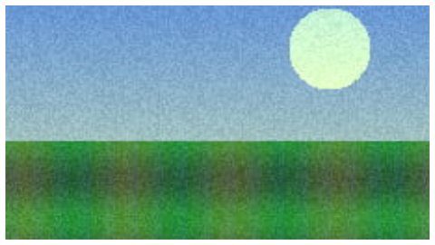

Images and sounds
Images
Every bitmap is written either with loss (photos) or exactly (icons, pixel art, patterns). By default Animate's own setting decides — Library › Properties › Compression: Photo (JPEG) bitmaps are compressed with their quality, Lossless (PNG/GIF) ones keep every pixel. Change it per bitmap in the panel's Images section, and choose the formats:
| Formats | Notes | |
|---|---|---|
| Lossy (photos) | JPEG (default), WebP, AVIF | JPEG at Animate's quality uses Animate's own JPEG, so imported JPEGs stay byte for byte. A photo with transparency is written as WebP (JPEG has none). AVIF's quality is scaled to look like JPEG at the same number. |
| Lossless | PNG (default, optimised), WebP lossless | Every pixel stays the same, also the colour of transparent ones. |
Quality 0 uses each bitmap's own quality from Animate. Pictures that come out smaller without loss (small icons, flat graphics) stay lossless. In browsers, WebP works everywhere current; AVIF in about 93 % of them (2026).


Resolution
A bitmap that is only ever shown smaller than its pixels — scaled down, inside scaled symbols, in tweens, under the camera, as a bitmap fill — is written smaller: down to twice its largest size on stage by default (Resolution 2×, sharp on HiDPI screens and when the SVG is shown at twice its size). The other choices are 1×, 1.5×, 3× and Every pixel. Every frame and nesting level counts, so a bitmap is never written smaller than it is shown; it is still drawn at its full size, so nothing moves.
Pixel art (no Allow smoothing), repeating bitmap fills and bitmaps whose smaller file wouldn't be smaller keep every pixel; tick Full in the list for others. A 12-megapixel photo shown at 20 %: JPEG 1042 KB → 100 KB, AVIF 133 KB → 13 KB — and the export gets faster.
The Result lists the format, pixels and size of every bitmap.
Sounds
Frame sounds play in the JS player, with Animate's sound settings: Event, Start, Stop and Stream sync, Repeat and Loop, the effects and custom envelopes (Edit sound envelope: volume and panning), in and out points, sounds in movie clips and on button states. Stream sounds follow the playhead, also after gotoAndPlay() or a pause.

| Formats | Notes | |
|---|---|---|
| Compressed | MP3 (default), Opus | Bit rate from Animate's MP3 setting (otherwise 128 kbps stereo, 64 mono, less for low sample rates), or one for all. Opus sounds as good at half the bit rate; it plays in all current browsers, Safari from 18.4. Imported MP3s at their own quality stay byte for byte. |
| Uncompressed | WAV | Sounds set to Raw in Animate (at its sample rate), or chosen per sound. |
Every sound is cut to the part the frames play: Animate pads its sounds with silence (a 0.4 s beep came out as a 3.7 s file). Convert stereo to mono is followed.
The encoders — the Squoosh codecs for images, LAME, libopus and mpg123 for sound — are WebAssembly builds that load only when a document has bitmaps or sounds.
Linked instead of embedded
Untick Embed images and sounds (Graphics & text) to write bitmaps and sounds next to the SVG (bitmaps/, sounds/) and link them: the SVG gets much smaller, the page makes more requests. Linked images don't show when the SVG is used as an <img> (browsers load nothing from inside an image) — embed them for that.